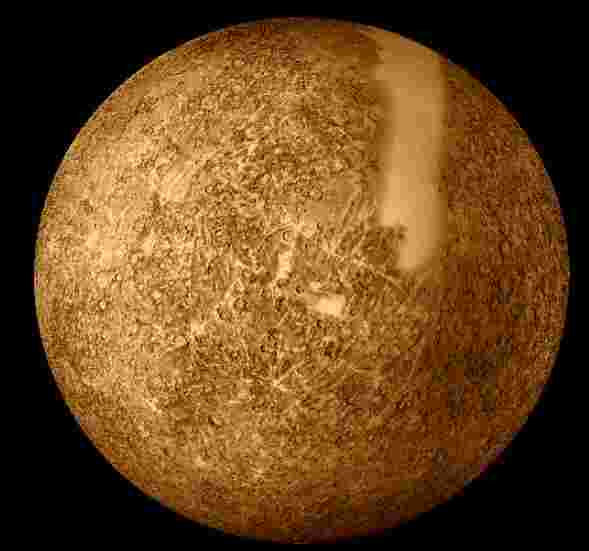
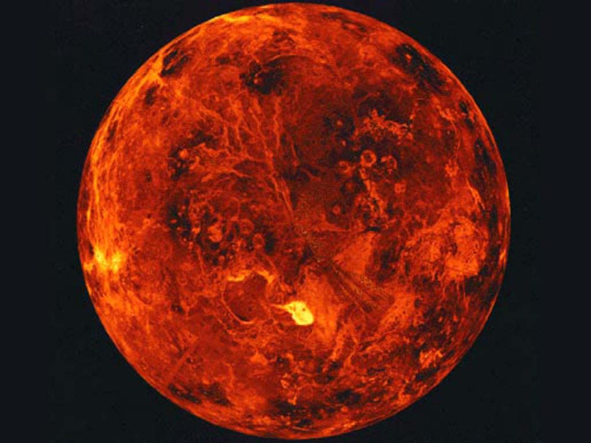
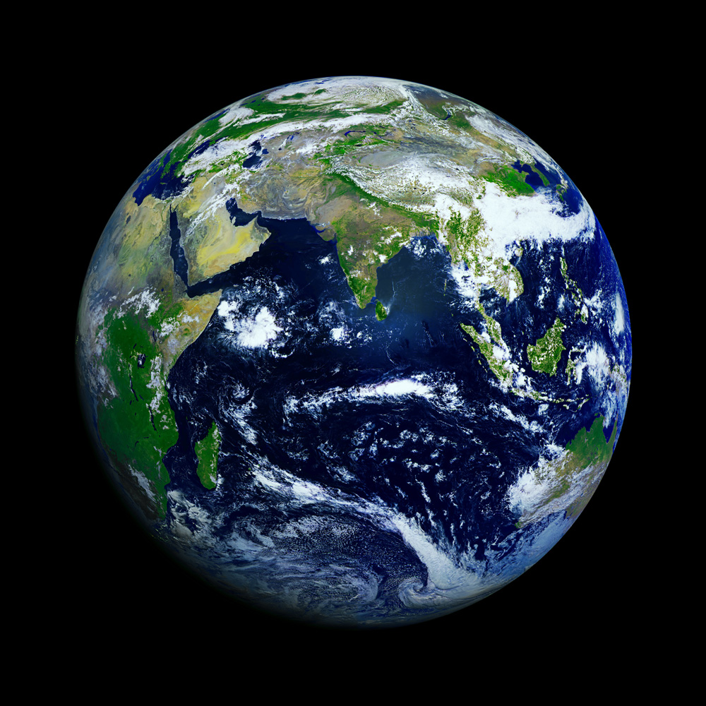
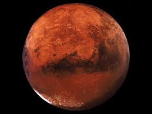

Планети земної групи
- Меркурій
- Венера
- Земля
- Марс

Меркурій
Меркурій є найближчою до Сонця й найменшою планетою системи.
У Меркурія немає супутників, а його найпомітнішими, після ударних кратерів,
деталями рельєфу є численні криволінійні уступи довжиною до сотень кілометрів і висотою до 3 км.
Ймовірно, вони виникли при стисканні планети внаслідок поступового остигання її надр.
Меркурій має вкрай розріджену атмосферу. Вона складається з атомів, «вибитих» із поверхні планети сонячним вітром.
Велике залізне ядро Меркурія та його тонка кора ще не отримали належного пояснення.
Є гіпотеза, яка припускає, що зовнішні шари планети, які складаються з легких елементів,
було зірвано внаслідок гігантського зіткнення, яке зменшило розміри планети, а також запобігло повному поглинанню Меркурія молодим Сонцем.

Венера
Венера близька за розміром і масою до Землі (її маса становить 0,815 земної).
Як і Земля, вона має потужну атмосферу та товсту силікатну оболонку навколо залізного ядра.
На поверхні Венери є яскраві ознаки колишньої геологічної активності, в першу чергу вулканізму.
Води в складі Венері майже нема, а її атмосфера в дев'яносто разів щільніша за земну.
Це найгарячіша планета: температура її поверхні перевищує 400 °C.
Причиною цього є парниковий ефект у щільній, багатій на вуглекислий газ атмосфері.
Надійних ознак сучасної ендогенної геологічної активності на Венері не виявлено,
але, оскільки у неї немає магнітного поля, яке запобігло б виснаженню її існуючої атмосфери,
це дозволяє припустити, що її атмосфера регулярно поповнюється вулканічними виверженнями.
Природних супутників у Венери нема.

Земля
Земля є найбільшою та найщільнішою серед внутрішніх планет.
У Землі є один природний супутник — Місяць, це єдиний великий супутник планет земної групи.
Серед планет земної групи Земля є унікальною (насамперед — гідросферою).
Атмосфера Землі радикально відрізняється від атмосфер інших планет — вона містить вільний кисень.
Питання про наявність життя де-небудь, крім Землі, залишається відкритим.

Марс
Марс менший за Землю та Венеру (0,107 маси Землі).
Він має атмосферу, що складається переважно з вуглекислого газу, з поверхневим тиском 6,1 мбар (0,6 % від земного).
На його поверхні є вулкани, найбільший із яких, Олімп, перевищує розмірами всі земні вулкани, досягаючи висоти 21,2 км.
Рифтові западини (долини Марінера) свідчать про колишню тектонічну активність.
Сучасної тектонічної та вулканічної активності на Марсі не зареєстровано, але, за деякими оцінками,
Олімп востаннє вивергався не більше 2 млн років тому.
Червоний колір поверхні Марса зумовлений великою кількістю оксиду заліза в його ґрунті.
Планета має два супутники — Фобос і Деймос.
Припускається, що вони являють собою захоплені астероїди.